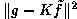
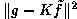
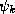
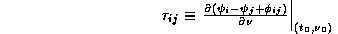
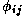
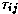
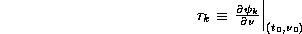
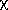

News
News
| Getting Started | Documentation | Glish | Learn More | Programming | Contact Us |
|
| VERSIONID |
News
|
raster
raster graphics
ray-tracing
receptor
Region
Region Manager
regular expression
regularization method
regularization parameter
rendering
residual delay
residual fringe rate
restoring beam
RFI
RGB
right ascension
RLE
rotation measure
In a video display unit, the pattern of horizontal scan lines that is swept by the electron beam from the top to bottom of the display while refreshing the emission from the phosphors at individual pixels.
Computer graphics in which images composed of an array of pixels arranged in rows and columns are generated on a display space. The data to be displayed on the raster are computed as a bitmap and stored in a frame buffer. Operations that can be performed efficiently on portions of the raster assist the handling of blocks of pixel data in the frame buffer. For instance, bit BLTs (bit block transfers) move blocks of bits from one portion of the buffer to another. Contrast with vector graphics.
A technique used in computer graphics to create images by calculating the paths taken by rays of light entering the observer's eye at different angles and using these to compute the intensities and colors of individual pixels in the image. Objects in the scene are modeled as collections of abutting surfaces which may be rectangles, triangles, or more complicated shapes such as 3D splines. The color, reflectance, transmittance, refraction, texture, etc. of these surfaces affect how they contribute to the color and brightness of the ray, and the location, spectrum and brightness of light sources are accounted for.
Combination of a radiation-receiving conductor and a signal pick-off device. Example: a dipole. In general, a receptor can have considerable internal structure. For instance, when an interferometer array is used as a phased (tied) array, it behaves as if connected to a single pair of receptors. Also, a receptor in an array such as the Ooty radio telescope may consist of a group of dipoles which can be phased independently for steering the beam, but which are connected to a single signal pick-off device. See also: feed and antenna.
A region specifies a region of an Image in either world or pixel coordinates. It is a generalization of the BLC, TRC coordinates used in other packages. Construction, destruction, and interaction with regions is via the regionmanager.
The regionmanager allows construction, destruction, and interaction with regions.
(RE): one of the wildcard patterns used by Unix utilities and editors such as EMACS.
In the numerical solution of ill-posed problems, given noisy data,
a method in which the original problem is converted into
a well-posed problem by requiring of the solution
to the modified problem (which now is an approximate solution to
the original problem)
that it satisfy some smoothness constraint.
The prototypical ill-posed problem has the form
Kf = g +
where K is a known linear integral operator (e.g., a
convolution operator), where g + , which
is given, represents some noisy measurement,
and where f is unknown. In the context of radio interferometry, one may take
g + to be the dirty image and K to be the operator which
convolves the ``true'' radio source brightness distribution f with
the dirty beam. Now, our approximate solution,
 ,
to the ill-posed problem is found by minimizing the expression
,
to the ill-posed problem is found by minimizing the expression
for some given choice of the regularization parameter
 , in the range [0,1].
 is the mean squared residual (occasionally
some other measurement of the error is used), and
S()
is a measure of the roughness of the computed solution---say,
some power of a norm or seminorm of ,
or a similar quantity,
such as the negative of the (Shannon) entropy of
.
, in the range [0,1].
 is the mean squared residual (occasionally
some other measurement of the error is used), and
S()
is a measure of the roughness of the computed solution---say,
some power of a norm or seminorm of ,
or a similar quantity,
such as the negative of the (Shannon) entropy of
.
Proper choice of
must be based on statistical
considerations which depend on the distribution of measurement
errors; often, one chooses in order
achieve an a priori reasonable value of the mean squared residual.
The Maximum Entropy Method,
Tikhonov regularization, and the
Prussian helmet CLEAN algorithm
are special cases of the regularization method.
Appropriate choice of S is discussed by J. Cullum
[The effective choice of the smoothing norm in
regularization, Math. Comp., 33 (1979) 149-170],
and the choice of S and , by a statistical method known
as cross validation, is described by G. Wahba
[Practical approximate solutions to linear operator
equations when the data are noisy, SIAM J. Numer. Anal.,
14 (1977) 651-677].
Often, some Sobolev norm is chosen for S.
Usually, in addition to the smoothness constraint, f is assumed
to be of known, compact support.
Other constraints, such as non-negativity, may also be included.
In the case in which the data are exact---i.e., when
=0, so that g = Kf
---one may obtain the regularized solution corresponding to
=0
as the limit of regularized solutions
as -->0.
See variational method;
also see D. M. Titterington [General structure of regularization
procedures in image reconstruction, Astron. Astrophys., 144
(1985) 381-387].
In the regularization method for the solution of ill-posed
problems, a smoothing parameter in the range [0,1], which controls
the trade-off between an error term, measuring agreement of the
computed solution with the given data,
and a term S(), which measures the roughness of
.
I.e., controls the amount of "regularization".
See super-resolution.
Construction of an image from a mathematical model of a three-dimensional object or scene, e.g., by ray-tracing.
Expressing the
antenna/i.f. phase,
,
for antenna k of a
VLBI array as a function of frequency
as well as of time,
the residual delay on the i-j baseline at
(t ,
, )
is given by
)
is given by

where  denotes the visibility phase on the i-j baseline. (The corresponding partial with respect to t is called the residual fringe rate.) Usually, the major contributor to residual delay is the difference in the station clock errors. The residual delay is a group delay, rather than a phase delay. It is termed "residual" because it is assumed that geometric effects have already been compensated for.
The "antenna components" of , namely
,
are called the antenna residual delays and the corresponding partials w.r.t. t are called the antenna residual fringe rates. They are among the solution parameters of the global fringe fitting algorithm for VLBI.
See residual delay.
In radio astronomical imaging, an elliptical Gaussian function h with which the final iterate of a deconvolution algorithm such as the Högbom CLEAN, Clark CLEAN, or the Maximum Entropy Method is convolved, in order to diminish any spurious high spatial frequency features. h is specified by its major axis (usually the FWHM), its minor axis, and the position angle on the sky of its major axis. Usually these parameters are set by fitting to the central lobe of the dirty beam. When applied to the final iterate of a CLEAN deconvolution, also called the CLEAN beam.
Radio Frequency Interference.
Red, Green, Blue: The three primary colors of light which can be mixed to produce any other color. Colored images are often stored as a sequence of RGB triplets or as separate red, green and blue overlays though this is not the only possible representation (see CMYK and HSV). These colors correspond to the three "guns" in a color cathode-ray tube and to the color receptors in the human eye. The term RGB is often used as a synonym for color, as in "RGB monitor" as opposed to monochrome (black and white) monitor.
See also chromaticity.
Angular distance (in hours, minutes and seconds) along the celestial equator eastward from the vernal equinox to the hour circle of a celestial object.
Run Length Encoding: A type of compression algorithm which replaces sequences ("runs") of consecutive repeated characters (or other units of data) with a single character and the length of the run. Either this technique can be applied to all input characters (including runs of length one), or a special character can be used to introduce a run-length encoded group. The longer and more frequent the runs in the data, the greater the compression that is achieved. This technique is most useful for encoding black and white graphics images where the data units are single-bit pixels.
(RM): a wavelength-independent measure of the integrated Faraday rotation along a line of sight, or at a given pixel in an image. The RM is obtained by fitting the
 = RM²
law expected for pure Faraday rotation to the observed variation of
linear polarization position angle with
wavelength in multi-wavelength
data for that line of sight (or pixel). The derived RM values
are meaningful only if the data are at comparable resolution at all
wavelengths, the sampling of the data in wavelength is good enough to
resolve any 180° ambiguities in the rotations,
and the ² law is a
good fit to the data.
You could now go back to the:
Copyright © 1995,1996,1999,2000 Associated Universities Inc., Washington, D.C.
abridle@nrao.edu, 20 August 1996, 15:48 EDT